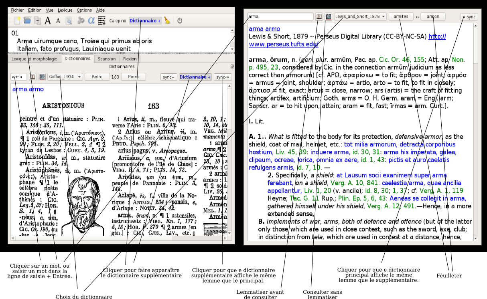

Collatinus 12 — guide
index précédent : Modules suivant : Scander
Dictionnaires
Cette copie annotée de Collatinus montre comment piloter les dictionnaires :

Et voici un résumé des commandes :
- Choix du dictionnaire dans un menu déroulant ;
- Sélection du mot à chercher soit en cliquant dans le texte latin,
soit en saisissant le mot dans la ligne de saisie à gauche
(dans ce dernier cas, on peut chercher la forme exacte,
sans lemmatisation, en cliquant sur l'icone représentant
une page unique) ;
- Feuilleter le dictionnaire (page précédente, page suivante,
pour les dictionnaires en mode image ;
articles précédent et suivant pour les dictionnaires numériques) ;
- Ajouter une fenêtre de dictionnaire (le même, ou un différent).
Le même bouton permet de fermer le dictionnaire supplémentaire ;
- Demander l'affichage du même mot dans les deux dictionnaires,
systématiquement (en activant le bouton sync+) ou
ponctuellement (en appuyant sur un des boutons sync->
ou <-sync, selon la fenêtre active).
index précédent : Lemmatiser et analyser suivant : Scander